-

Attempt
30 -

Marks Obtained
0 / 65 -

Your score
0.0% -

Time Taken
00 H 00 M 07 S -
Result
Failed
| No | Domain | Total Question | Correct | Incorrect | Unattempted | Marked as Review |
|---|---|---|---|---|---|---|
|
|
|
|
|
|
|
|
|
|
|
|
|
|
|
|
|
|
|
|
|
|
|
|
|
|
|
|
|
|
|
|
|
|
|
|
|
|
|
|
|
|
|
|
|
|
|
|
A company is planning to build a 2-tier architecture with a web server and a database server. The architecture will be hosted on EC2 Instances accordingly. The database server will experience a lot of read/write operations whereas the web server will have a standard workload. Which of the following EBS volumes are optimum for the underlying EC2 Instances? (Select Two)
Correct Answers – A and D
If the database is going to have a lot of read/write requests, then the ideal solution is to have the underlying EBS Volume as Provisioned IOPS. Whereas, in the case of the standard workload, General Purpose SSD should be sufficient.
The below excerpt from AWS documentation shows the different types of EBS Volumes for different workloads:
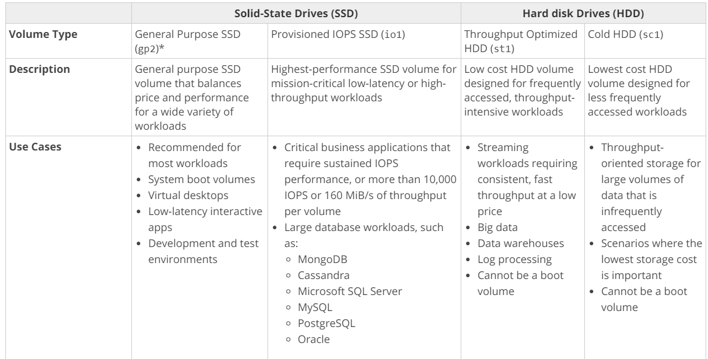
For more information on EBS Volume types, please visit the following URL:
https://docs.aws.amazon.com/AWSEC2/latest/UserGuide/EBSVolumeTypes.html
Try now labs related to this question
-
This lab walks you through the steps to launch and configure a virtual machine in the Amazon cloud.
-
You will practice using Amazon Machine Images to launch Amazon EC2 Instances and use key pairs for SSH authentication to log into your instance. You will create a web page and publish it.
- Credit Needed10
- Time 0 : 30
You are hosting a web server on an EC2 Instance. With the number of requests consuming a large part of the CPU, the response performance for the application is getting degraded. Which of the following would help to alleviate the problem and provide a better response time?
Correct Answer - D
Since there is a mention of only one EC2 instance, placing it behind the ELB would not make much sense, hence Options A and B are invalid.
Having it in an Auto Scaling Group with just one instance would not make much sense.
CloudFront distribution would help to alleviate the load on the EC2 Instance because of its edge location and cache feature.
For more information on CloudFront, please visit the following URL:
https://docs.aws.amazon.com/AmazonCloudFront/latest/DeveloperGuide/Introduction.html
Try now labs related to this question
-
This lab walks you through the steps to launch and configure a virtual machine in the Amazon cloud.
-
You will practice using Amazon Machine Images to launch Amazon EC2 Instances and use key pairs for SSH authentication to log into your instance. You will create a web page and publish it.
- Credit Needed10
- Time 0 : 30
A company is hosting a MySQL database in AWS using the AWS RDS service. To offload the reads, a Read Replica has been created and reports are run off the Read Replica database. But at certain times, the reports show stale data. What could be the possible reason behind this?
Correct Answer – C
An AWS Whitepaper on the caveat for reading Replicas is given below which must be taken into consideration by architects:
Read Replicas are separate database instances that are replicated asynchronously. As a result, they are subject to replication lag and might be missing some of the latest transactions. Application architects need to consider which queries have the tolerance to slightly stale data. Those queries can be executed on a Read Replica, while the rest should run on the primary node. Read Replicas may also not accept any write queries.
For more information on AWS Cloud best practices, please visit the following URL:
https://d1.awsstatic.com/whitepapers/AWS_Cloud_Best_Practices.pdf
Try now labs related to this question
This lab walks you through to the creation and testing of an Amazon Relational Database Service (Amazon RDS) database. We will create an RDS MySql Database and test the connection using MySQL Workbench.
- Credit Needed10
- Time 0 : 50
A company plan to use SQS queues and AWS Lambda to leverage the serverless aspects of the AWS Cloud. Each invocation to AWS Lambda will send a message to an SQS queue. What should be done to achieve this?
Correct Answer – B
While working with AWS Lambda functions, if there is a need to access other resources, ensure that an IAM role is in place. The IAM role will have the required permissions to access the SQS queue.
- For more information on AWS IAM Roles, please visit the following URL:
Try now labs related to this question
This lab walks you through the steps on how to create IAM Users, IAM Groups and adding IAM User to the IAM Group in AWS IAM service
- Credit Needed10
- Time 0 : 20
You have enabled CloudTrail logs for your company’s AWS account. In addition, the IT Security department has mentioned that the logs need to be encrypted. How could this be achieved?
Correct Answer – B
AWS Documentation mentions the following:
By default, CloudTrail event log files are encrypted using Amazon S3 server-side encryption (SSE). You can also choose to encrypt your log files with an AWS Key Management Service (AWS KMS) key. You can store your log files in your bucket for as long as you want. You can also define Amazon S3 lifecycle rules to archive or delete log files automatically. If you want notifications about log file delivery and validation, you can set up Amazon SNS notifications.
For more information on how CloudTrail works, please visit the following URL:
https://docs.aws.amazon.com/awscloudtrail/latest/userguide/how-cloudtrail-works.html
A company has set up its data layer in the Simple Storage Service. There are a number of requests which include read/write and updates to objects in an S3 bucket. Users sometimes complain that updates to an object are not being reflected. What could be the most likely reason for this?
Correct Answer – B
Updates made to the objects in S3 follow an eventual consistency model. Hence, for object updates, there can be a slight delay when an updated object is provided back to the user on the next read request.
- For more information on various aspects of the Simple Storage Service, please visit the following URL:
Try now labs related to this question
This lab walks you through to Amazon Simple Storage Service. Amazon S3 has a simple web services interface that you can use to store and retrieve any amount of data, at any time, from anywhere on the web. In this lab we will demonstrate AWS S3 by creating a sample S3 bucket, uploading an object to S3 bucket and setting up bucket permission and policy.
- Credit Needed10
- Time 0 : 30
Your company has enabled CORS on your S3 bucket to allow cross-origin resource sharing. In the CORS configuration, you need to specify the values for the "AllowedMethod" element. What would be your suggestion to the developer?
Correct Answer: C
Only these methods are supported: GET, PUT, POST, DELETE, and HEAD
Refer page 153 on the below link under the topic "AllowedMethod Element"
Reference for CORS:
A company planning to move to the AWS Cloud wants to leverage its existing Chef recipes for configuration management of its infrastructure. Which AWS service would be ideal to fulfill this requirement?
Correct Answer – C
AWS Documentation mentions the following to support this requirement:
AWS OpsWorks is a configuration management service that helps you to configure and operate applications in a cloud enterprise by using Puppet or Chef. AWS OpsWorks Stacks and AWS OpsWorks for Chef Automate let you use Chef cookbooks and solutions for configuration management, while AWS OpsWorks for Puppet Enterprise lets you configure a Puppet Enterprise master server in AWS. Puppet offers a set of tools for enforcing the desired state of your infrastructure and automating on-demand tasks.
For more information on AWS OpsWorks, please visit the following URL:
https://docs.aws.amazon.com/opsworks/latest/userguide/welcome.html
An application consists of a web server and a database server, hosted on separate EC2 Instances. There are a lot of read requests on the database that are degrading the performance of the application. What could be helpful in improving the performance of the database under this heavy load?
Correct Answer - B
The ideal solution would be to use ElastiCache.
AWS Documentation further mentions the following with respect to ElastiCache:
ElastiCache is a web service that makes it easy to set up, manage, and scale a distributed in-memory data store or cache environment in the cloud. It provides a high-performance, scalable, and cost-effective caching solution while removing the complexity associated with deploying and managing a distributed cache environment.
For more information on AWS ElastiCache, please visit the following URL:
A company offers its customers short-lived contests that require users to upload files in hopes of winning prizes. These contests can last up to two weeks, with unknown uploads and the resulting file analysis can last up to three months. The company currently stores four weeks of data in an S3 bucket and now it needs an economic and scalable object storage solution to hold it's customer files. The files will be accessed once and then deleted. What would be the best solution for the company in this scenario?
Correct Answer: D
- Option D is correct. S3 Standard– IA is for data that is accessed less frequently but requires rapid access when needed.
- Option A is incorrect. Amazon Glacier is for data archiving and can be accessed within minutes
- Option B is incorrect. Elastic File System is a file storage, not object storage as required.
- C. S3 standard is for frequently accessed data, and less economical than S3 - IA.
References:
Try now labs related to this question
This lab walks you through to Amazon Simple Storage Service. Amazon S3 has a simple web services interface that you can use to store and retrieve any amount of data, at any time, from anywhere on the web. In this lab we will demonstrate AWS S3 by creating a sample S3 bucket, uploading an object to S3 bucket and setting up bucket permission and policy.
- Credit Needed10
- Time 0 : 30
You are planning to host a web application consisting of a web server and a database server. These servers are going to be hosted on different EC2 Instances in different subnets in a VPC. What should be used to ensure that the database server only allows traffic from the webserver?
Correct Answer – A
Security groups can be used to control traffic into an EC2 Instance.
The below snapshot from the AWS Documentation shows the rules tables for security groups in a sample web and database server setup:

For more information on this use case scenario, please visit the following URL:
Note:
NACL is used when you want to deny access for a particular IP address or the CIDR block (Set of IP address).
So, the main point here is that if the requirement allows the traffic, then you can go with the Security Group.
if the requirement mentioned that is - denies (Not allow) the traffic, then you can go with the NACL.
Try now labs related to this question
-
Learn how to build Public and Private subnets from scratch.
-
VPC wizard will not be used. So every component required to build public and private subnets will be created and configured manually.
-
This will give an in-depth understanding of internal components of VPC and subnets.
- Credit Needed10
- Time 0 : 30
Your IT Supervisor is worried about users, accidentally deleting objects from an S3 bucket. Which of the following can help prevent accidental deletion of objects in an S3 bucket? (Select Three)
Correct Answers – B, C, and D
AWS Documentation mentions the following:
When a user performs a DELETE operation on an object, subsequent simple (un-versioned) requests will no longer retrieve the object. However, all versions of that object will continue to be preserved in your Amazon S3 bucket and can be retrieved or restored.
Versioning’s MFA Delete capability, which uses multi-factor authentication, can be used to provide an additional layer of security. By default, all requests to your Amazon S3 bucket require your AWS account credentials. If you enable Versioning with MFA Delete on your Amazon S3 bucket, two forms of authentication are required to permanently delete a version of an object: your AWS account credentials and valid six-digit code and serial number from an authentication device in your physical possession.
For more information on the features of S3, please visit the following URL:
To know more about Option D, Please refer to the below AWS Document.
Try now labs related to this question
This lab walks you through to Amazon Simple Storage Service. Amazon S3 has a simple web services interface that you can use to store and retrieve any amount of data, at any time, from anywhere on the web. In this lab we will demonstrate AWS S3 by creating a sample S3 bucket, uploading an object to S3 bucket and setting up bucket permission and policy.
- Credit Needed10
- Time 0 : 30
A company has been using AWS cloud services for six months and have just finished a security review.
Which of the following is considered a best practice in the security pillar of the well-architected framework?
Correct Answer: B
- Option B is correct. Monitoring and alerting for key metrics and events is the best practice of the Security pillar
- Option A is incorrect. For the root user, you should follow the best practice of using this login only to create another, an initial set of IAM users and groups for longer-term identity management operations
- Option C is incorrect. Non-overlapping Private IP addresses are in the Reliability pillar.
- D. Design using elasticity to meet demand is in the Performance Efficiency pillar (Design for Cloud Operations).
References:
Try now labs related to this question
This lab walks you through the Creating Rules in the Events Section of Cloudwatch and adding a SNS target. It will tested using EC2 Instance state events
- Credit Needed10
- Time 0 : 30
A company has a Redshift Cluster defined in AWS. The IT Operations team have ensured that both automated and manual snapshots are in place. Since the cluster is going to be run for a couple of years, Reserved Instances have been purchased. There has been a recent concern on the cost, being incurred by the cluster. Which step should be carried out to minimize the costs being incurred by the cluster?
Correct Answer - A
AWS Documentation mentions the following:
Regardless of whether you enable automated snapshots, you can take a manual snapshot whenever you want at any time. By default, manual snapshots are retained indefinitely, even after you delete your cluster. You can specify the retention period when you create a manual snapshot or you can change the retention period by modifying the snapshot. If you create a snapshot using the Amazon Redshift console, it defaults the snapshot retention period to 365 days.
Automated snapshots are automatically deleted within the period of 1(Least) to 35(Max) days (Based on the retention period settings). So we have to take care of the Manual snapshots instead of Automated snapshots. Amazon Redshift never deletes Manual snaphots automatically, like how it does for Automatic Snapshots.
- For more information on working with Snapshots, please visit the following URL:
Try now labs related to this question
This lab walks you through creation of a snapshot of EC2 instance and launch a new EC2 instance using AMI of that snapshot.
- Credit Needed10
- Time 0 : 30
A website is hosted on two EC2 instances that sit behind an Elastic Load Balancer. The response time of the website has been slowed down dramatically, and customers are placing fewer orders due to the wait time. Troubleshooting showed that one of the EC2 instances has been failed and only one instance is running now. What is the best course of action to prevent this from happening in the future?
Correct Answer: C
- Option C is correct. Using the elastic load balancer to perform health checks will determine whether or not to remove a non-performing or underperforming instance, and have the auto-scaling group launch a new instance.
- Option A is incorrect. Increasing the instance size doesn’t prevent failure of one or both the instances, therefore the website can still become slow or unavailable.
- B. Monitoring the VPC flow logs for the VPC will capture the VPC traffic, not the traffic for the EC2 instance. You would need to create a flow log for a network interface.
- D. Replicating the same two instance deployment may not prevent failure of instances and could still result in the website becoming slow or unavailable.
References:
Try now labs related to this question
AWS Auto Scaling will automatically scale resources as needed to align to your selected scaling strategy, This lab walks you through to use Auto Scaling to automatically launch or terminate EC2’s instances based on user defined policies, schedules and health checks.
- Credit Needed10
- Time 0 : 55
A company currently hosts a lot of data on its On-premises location. It wants to start storing backups of this data on AWS. How could this be achieved in the most efficient way?
Correct Answer – C
AWS Storage Gateway connects an on-premises software appliance with cloud-based storage to provide seamless integration with data security features between your on-premises IT environment and the AWS storage infrastructure. You can use the service to store data in the AWS Cloud for scalable and cost-effective storage that helps to maintain data security.
It has two types of configuration, cached volumes, and stored volumes.
Our requirement is to start storing backups of the on-premises data to AWS.
In cached volumes, you store your data in S3 and retain a copy of frequently accessed data subsets locally. It means that we are not storing the backups on S3 but the actual primary data itself.
But in the stored mode, your primary data is stored locally and your entire dataset is available for low-latency access while asynchronously backed up to AWS S3.
A company is planning to move its PostgreSQL database to AWS. There is a requirement for the ability to have replicas for the database and automated backup. Additionally, the company wants to maximize performance. Which of the following options would be best for this scenario?
Correct Answer - A
AWS Documentation mentions the following on Amazon Aurora:
Amazon Aurora is a drop-in replacement for MySQL and PostgreSQL. The code, tools, and applications you use with your existing MySQL and PostgreSQL databases can be used with Amazon Aurora.
Both Aurora and PostgreSQL are capable of fulfilling most of the requirements mentioned in the question, but Amazon Aurora will be the best option for performance. Amazon Aurora's PostgreSQL delivers up to three times the performance of RDS PostgreSQL.
For more information on Amazon Aurora PostgreSQL, please visit the following URL:
Try now labs related to this question
This lab walks you through the creation and testing of an Amazon Aurora database. We will create an Aurora MySQL Database and and test the connection.
- Credit Needed10
- Time 1 : 0
Currently, you have a set of Lambda functions which have business logic embedded in them. You want customers to have the ability to call these functions via HTTPS. How could this be achieved?
Correct Answer - A
An API Gateway provides the ideal access to your back end services via APIs.
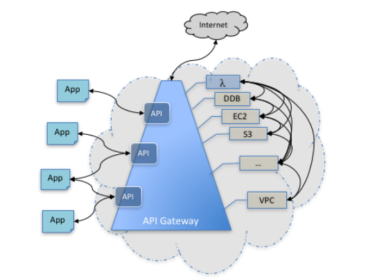
For more information on the API Gateway service, please visit the following URL:
https://docs.aws.amazon.com/apigateway/latest/developerguide/welcome.html
Users within a company need a place to store their documents. Each user must have his/her own location for placing the set of documents and should not be able to view another person’s documents. Also, users should be able to retrieve their documents easily. Which AWS service would be ideal for this requirement?
Correct Answer – A
The Simple Storage Service is the perfect place to store the documents. You can define a folder for each user and have policies that will restrict access so that each user can only access his/her own files.
References:
Try now labs related to this question
This lab walks you through to Amazon Simple Storage Service. Amazon S3 has a simple web services interface that you can use to store and retrieve any amount of data, at any time, from anywhere on the web. In this lab we will demonstrate AWS S3 by creating a sample S3 bucket, uploading an object to S3 bucket and setting up bucket permission and policy.
- Credit Needed10
- Time 0 : 30
A Solutions Architect is designing a solution to store and archive corporate documents. He has determined that Amazon Glacier is the right solution. Data has to be retrieved within 3-5 hrs as directed by the management.
Which feature in Amazon Glacier could be helpful to meet this requirement and ensure cost-effectiveness?
Correct Answer – D
- Option A - Vault Lock
- This feature of Amazon Glacier allows you to lock your vault with a variety of compliance controls that are designed to support such long-term records retention. Due to this reason, this is not the correct answer.
- Option B - Expedited retrieval
- It allows you to quickly access your data when occasional urgent requests are required for a subset of archives. The data is available within 1 - 5 minutes. Since our requirement is 3 - 5 hours, we do not need to use this option.
- Option C - Bulk retrieval
- They are the lowest-cost retrieval option, enabling you to retrieve large amounts of data within 5 - 12 hours. Due to this reason, it is not the correct answer.
AWS Documentation mentions the following on Standard retrievals:
Standard retrievals are a low-cost way to access your data within just a few hours. For example, you can use Standard retrievals to restore backup data, retrieve archived media content for same-day editing or distribution, or pull and analyze logs to drive business decisions within hours.
- For more information on Amazon Glacier retrievals, please visit the following URL:
You have an EC2 instance hosting a web application. It's expected that in the coming months, the number of users accessing the web application will increase. How would you provide high availability to the web application? (Select Two)
Correct Answers – A and C
The Elastic Load Balancer can be used to distribute traffic to EC2 Instances. So, to add elasticity to your setup, one can either do this or even use Route 53. In Route 53, you can setup weighted routing policies to distribute requests to multiple EC2 Instances.
- For more information, please visit the following URL on page 455 "Routing Traffic to an ELB Load Balancer" :
Note:
- Option B can't be the correct answer to this question.
The reason is here - Amazon ElastiCache improves application performance by storing critical pieces of data in memory for fast access. You can use this caching to significantly improve latency and throughput for many read-heavy application workloads. so, It will not help in elasticity.
- And option D will not help in elasticity for your application.
Hence, the correct answers are options A and C.
Try now labs related to this question
-
This lab walks you through AWS Elastic Load Balancing. Elastic Load Balancing automatically distributes incoming application traffic across multiple Amazon EC2 instances in the cloud. In this lab, we will demonstrate elastic load balancing with 2 EC2 Instances.
-
Duration: 00:30:00 Hrs
-
AWS Region: US East (N. Virginia)
- Credit Needed10
- Time 0 : 30
A company is hosting EC2 instances which focus on workloads for non-production and non-priority batch loads. Also, these processes can be interrupted at any time. Which of the following is the best pricing model to be used for EC2 instances in this case?
Correct Answer – C
Spot instances enable you to bid on unused EC2 instances, which can lower your Amazon EC2 costs significantly. The hourly price for a Spot instance (of each instance type in each Availability Zone) is set by Amazon EC2 and fluctuates depending on the supply of and demand for Spot instances. Your Spot instance runs whenever your bid exceeds the current market price.
Spot instances are a cost-effective choice if you can be flexible about when your applications run and if your applications can be interrupted. For example, Spot instances are well-suited for data analysis, batch jobs, background processing, and optional tasks.
Option A is invalid because even though Reserved instances can reduce costs, it's best for the workloads that would be active for longer periods of time rather than for batch load processes which could last for a shorter period.
Option B is not right because On-Demand instances tend to be more expensive than Spot Instances.
Option D is invalid because there is no concept of Regular instances in AWS.
For more information on Spot instances, please visit the URL below:
http://docs.aws.amazon.com/AWSEC2/latest/UserGuide/using-spot-instances.html
Try now labs related to this question
-
This lab walks you through the steps to launch and configure a virtual machine in the Amazon cloud.
-
You will practice using Amazon Machine Images to launch Amazon EC2 Instances and use key pairs for SSH authentication to log into your instance. You will create a web page and publish it.
- Credit Needed10
- Time 0 : 30
A company requires an open-source system for automating the deployment, scaling, and management of containerized applications. Which of the following would be ideal for such a requirement?
Correct Answer – A
AWS Documentation mentions the following;
Amazon Elastic Container Service for Kubernetes (Amazon EKS) is a managed service that makes it easy for you to run Kubernetes on AWS without the requirement of installing and operating your own Kubernetes clusters. Kubernetes is an open-source system for automating the deployment, scaling, and management of containerized applications. Operating Kubernetes for production applications presents a number of challenges. You need to manage the scaling and availability of your Kubernetes masters and persistence layer by ensuring that you have chosen appropriate instance types, running them across multiple Availability Zones, monitoring their health, and replacing unhealthy nodes. You need to patch and upgrade your masters and worker nodes to ensure that you are running the latest version of Kubernetes. All this requires expertise and a lot of manual work. With Amazon EKS, upgrades and high availability are managed for you by AWS. Amazon EKS runs three Kubernetes masters across three Availability Zones in order to ensure high availability. Amazon EKS automatically detects and replaces unhealthy masters, and provides automated version upgrades and patching for the masters.
- For more information on the Elastic Container Service, please visit the below URL:
A small company started using EBS backed EC2 instances for the cost improvements over their own running servers. The company’s policy is to stop the development servers over weekend and restart them next week. First time when the servers were brought back, none of the developers were able to SSH into them. What did the server most likely overlook?
Correct Answer: C
- Option C is correct. The instance retains its private IPv4 addresses and any IPv6 addresses when stopped and started. AWS releases public IPv4 address and assigns a new one when it is stopped & started.
- Option A is incorrect. An EC2 instance retains its associated Elastic IP addresses.
- Option B is incorrect. Security groups do not need to be reassigned to instances that are restarted.
- Option D is incorrect. EBS backed instances are the only instance type that can be started and stopped.
Reference:
Try now labs related to this question
-
This lab walks you through the steps to launch and configure a virtual machine in the Amazon cloud.
-
You will practice using Amazon Machine Images to launch Amazon EC2 Instances and use key pairs for SSH authentication to log into your instance. You will create a web page and publish it.
- Credit Needed10
- Time 0 : 30
You created your own VPC and subnet in AWS and launched an instance in that subnet. On attaching an Internet Gateway to the VPC, you see that the instance has a public IP. The route table is shown below:
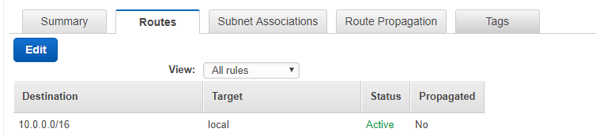
Still, the instance cannot be reached from the Internet. What changes are required to be made to the route table to ensure that the issue is resolved?
Correct Answer – A
The route table needs to be modified as shown below to ensure that routes from the Internet reach the instance:
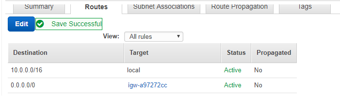
Hence by default, all other options become invalid.
- For more information on Route Tables, please visit the URL below:
Try now labs related to this question
-
Learn how to build Public and Private subnets from scratch.
-
VPC wizard will not be used. So every component required to build public and private subnets will be created and configured manually.
-
This will give an in-depth understanding of internal components of VPC and subnets.
- Credit Needed10
- Time 0 : 30
The management team of your company has asked you to replicate the current set of AWS resources into another region. Which of the following is the cost-optimized option to achieve this?
Correct Answer – D
Since cost is a factor, the options A and B are invalid.
The best and most cost-effective option is to create CloudFormation templates which can be used to spin up resources in another region during disaster recovery.
- Option C is Incorrect because Elasticbeanstalk cannot be used to replicate the infrastructure in another region, whereas the Cloudformation uses a template that can be used to replicate the infrastructure in another region quickly in a cost-effective manner, as the question requires.
- For more information on CloudFormation, please visit the URL below:
You create an Auto Scaling Group which is used to spin up instances on demand. As an architect, you need to ensure that the instances are pre-installed with software when they are launched. What are the different ways to achieve this? (Select Two)
Correct Answers – B and C
The User data section of an instance launch can be used to pre-configure software after the instance is initially booted.
For more information on User data, please visit the below URL:
Also, you can create an AMI or a golden image with the already installed software. Then create a launch configuration which can be used by that Auto Scaling Group.
For more information on AMIs, please visit the below URL:
https://docs.aws.amazon.com/AWSEC2/latest/UserGuide/AMIs.html
You are building a stateless architecture for an application that will consist of web servers and an Auto Scaling Group. What would be an ideal storage mechanism for Session data?
Correct Answer – A
The below diagram from AWS Documentation represents how stateless architecture would look like:
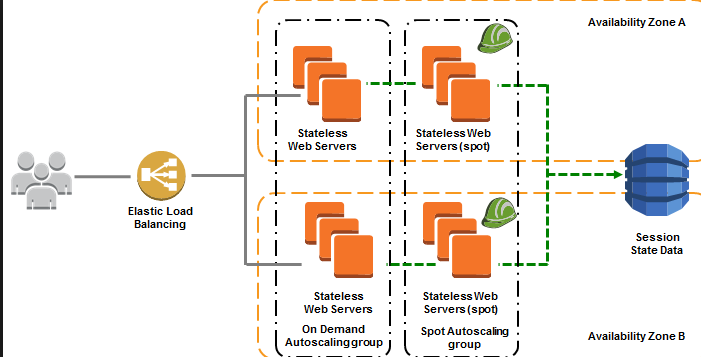
For more information, please visit the following URL:
You have a set of IIS Servers running on EC2 Instances. You want to collect and process the log files generated from these IIS Servers. Which service would be ideal to run in this scenario?
Correct Answer – A
Amazon EMR is a managed cluster platform that simplifies running big data frameworks, such as Apache Hadoop and Apache Spark, on AWS to process and analyze vast amounts of data. By using these frameworks and related open-source projects, such as Apache Hive and Apache Pig, you can process data for analytics purposes and business intelligence workloads. Additionally, you can use Amazon EMR to transform and move a large amount of data into and out of other AWS data stores and databases, such as Amazon Simple Storage Service (Amazon S3) and Amazon DynamoDB.
Options B and C are partially correct as it would be an overhead for EC2 Instances to process log files when you already have a ready-made service to help in this regard.
Option D is in invalid because DynamoDB is not an ideal option to store log files.
For more information on EMR, please visit the URL below:
http://docs.aws.amazon.com/emr/latest/ManagementGuide/emr-what-is-emr.html
You need to ensure that new objects being uploaded to an S3 bucket are available in another region, due to the criticality of the data hosted in the S3 bucket. How could you achieve this in the easiest way possible?
Correct Answer – A
AWS Documentation mentions the following:
Cross-Region Replication is a bucket-level configuration that enables automatic, asynchronous copying of objects across buckets in different AWS Regions.
For more information on Cross-Region Replication in the Simple Storage Service, please visit the URL below:
You want to use AWS to host your own website with a unique domain name that uses the format www.example.com. How would you achieve this?
Correct Answer: A
- Option A is correct. Route53 is used to register a domain and route requests to a website.
- Option B is incorrect. Hosting on EC2 is not necessary here as server-side scripting is not needed and S3 will scale automatically.
- Option C is incorrect. Hosting on EC2 is not necessary and this particular implementation can lead to different configurations on each server.
- Option D is incorrect. A CDN will improve the delivery time of your files and pages to the customer but is not a hosting solution itself.
References:
A storage solution is required in AWS to store videos uploaded by the user. After accessing these videos frequently for a period of a month, these videos can be deleted. How could this be implemented in the most cost-effective manner?
Correct Answer – B
AWS Documentation mentions the following on Lifecycle Policies:
Lifecycle configuration enables you to specify the lifecycle management of objects in a bucket. The configuration is a set of one or more rules, where each rule defines an action for Amazon S3 to apply to a group of objects. These actions can be classified as follows:
- Transition actions – In which you define when objects transition occurs to another storage class. For example, you may choose transition objects to the STANDARD_IA (IA, for infrequent access) storage class 30 days after creation or archive objects to the GLACIER storage class one year after creation.
- Expiration actions – In which you specify when the objects expire. Then Amazon S3 deletes the expired objects on your behalf.
For more information on AWS S3 Lifecycle policies, please visit the following URL:
https://docs.aws.amazon.com/AmazonS3/latest/dev/object-lifecycle-mgmt.html
You are working as an AWS Architect for a global media firm. They have web servers deployed on EC2 instances across multiple regions. For audit purposes, you have created a CloudTrail trail to store all CloudTrail event log files to the S3 bucket.
This trail applies to all regions & is stored in S3 buckets at the EU-Central region. During last year’s audit, auditors have raised a query on the integrity of log files that are stored in S3 buckets and tendered as Non-Compliance. Which feature could help you to gain compliance from Auditors for this query?
Correct Answer: D
After you enable CloudTrail log file integrity, it will create a hash file called digest file which refers to logs that are generated. This digest file is saved in different folder in S3 bucket where log files are saved. Each of these digest files has the private key of public & private key pair. The DIgest file can be validated using the public key. This feature ensures that all the modifications made to CloudTrail log files are recorded.
- Option A is incorrect as by default all CloudTrail log files are delivered to S3 buckets using SSE-S3 encryption, this will not ensure the integrity of log files.
- Option B is incorrect as with Amazon SSE-KMS encryption for CloudTrail log file, there would be an additional layer of security for log files, but it won’t ensure the integrity of log files.
- Option C is incorrect as although this will restrict access to the bucket but won’t ensure that no modification has been done to log files post delivering in S3 buckets.
For more information on CloudTrail Log files Integrity, please refer to the following URLs:
You have an EC2 Instance in a particular region. This EC2 Instance has a preconfigured software running on it. You have been requested to create a disaster recovery solution in case the instance in the region fails. Which of the following is the best solution?
Answer - D
You can copy an Amazon Machine Image (AMI) within or across an AWS region using the AWS Management Console, the AWS command line tools or SDKs, or the Amazon EC2 API, all of which support the CopyImage action. You can copy both Amazon EBS-backed AMIs and instance store-backed AMIs. You can copy AMIs with encrypted snapshots and encrypted AMIs.
Copying a source AMI results in an identical but distinct target AMI with its own unique identifier. In the case of an Amazon EBS-backed AMI, each of its backing snapshots is, by default, copied to an identical but distinct target snapshot.
Option A is invalid, because it is a maintenance overhead to maintain another non-running instance.
Option B is invalid, because the preconfigured software could have settings on the root volume.
Option C is invalid, because this is a long and inefficient way to restore a failed instance.
For more information on Copying AMIs, please visit the below URL:
http://docs.aws.amazon.com/AWSEC2/latest/UserGuide/CopyingAMIs.html
You work in the media industry and have created a web application where users will be able to upload photos they create, to your website. This web application must be able to call the S3 API in order to function properly. Where would you store your API credentials while maintaining the maximum level of security?
Correct Answer – B
Applications must sign their API requests with AWS credentials. Therefore, if you are an application developer, you need a strategy for managing credentials for your applications that run on EC2 instances.
For example, you can securely distribute your AWS credentials to the instances, enabling the applications on those instances to use your credentials to sign requests, while protecting your credentials from other users. However, it's challenging to securely distribute credentials to each instance, especially those that the AWS creates on your behalfs, such as Spot Instances or instances in Auto Scaling groups. You must also be able to update the credentials on each instance when you rotate your AWS credentials.
IAM roles are designed so that your applications can securely make API requests from your instances, without requiring you to manage the security credentials that the applications use.
For more information on IAM Roles, please visit the below URL:
Try now labs related to this question
This lab walks you through the steps on how to create IAM Users, IAM Groups and adding IAM User to the IAM Group in AWS IAM service
- Credit Needed10
- Time 0 : 20
You need to ensure that data stored in S3 is encrypted but you don't want to manage the encryption keys. Which of the following encryption mechanisms should be used in this case?
Correct Answer - A
AWS Documentation mentions the following on Encryption keys:
- SSE-S3 requires that Amazon S3 manages the data and master encryption keys.
- SSE-C requires that you manage the encryption keys.
- SSE-KMS requires that AWS manages the data key but you manage the master key in AWS KMS.
For more information on using the Key Management Service for S3, please visit the URL below:
https://docs.aws.amazon.com/kms/latest/developerguide/services-s3.html
An organization is managing a Redshift Cluster in AWS. They need to monitor the performance of this Redshift cluster to ensure that it is performing as efficiently as possible. Which of the following services should be used for achieving this requirement? (Select Two)
Correct Answers - C and D
AWS Documentation mentions the following on monitoring Redshift Clusters:
Amazon CloudWatch metrics help you monitor the physical aspects of your cluster, such as CPU utilization, latency, and throughput. Metric data is displayed directly in the Amazon Redshift console. You can also view it in the Amazon CloudWatch console, or you can consume it in any other way you work with metrics such as with the Amazon CloudWatch Command Line Interface (CLI) or one of the AWS Software Development Kits (SDKs).
For more information on monitoring Redshift, please visit the URL below:
https://docs.aws.amazon.com/redshift/latest/mgmt/metrics.html
For Option D, please go through the link below:
You are working as an AWS Architect for a global insurance firm. For the web application, you are using S3 buckets and have configured CloudFront to cache image files. For audit purposes, you have created a CloudTrail trail in each region and the events logs files are logged in S3 bucket in the us-west-1 region.
There have been changes in CloudFront which have caused all traffic being routed to the origin, resulting in increased latency for users in other continents. After scrutinizing CloudTrail logs, you found that there are duplicate CloudFront events being logged. What configuration changes would you perform to eliminate duplicate CloudFront logs?
Correct Answer – A
Amazon CloudFront is a global service for which events are delivered to CloudTrail trails which include global services. To avoid duplicate Amazon CloudFront events, you can disable these events from delivering to CloudTrail trails in all regions & enable in only one region.
- Options B & D is incorrect as if CloudTrail trail is changed to logging a single region, global service event logging is off automatically, this will disable CloudFront events being logged instead of avoiding duplicate logs.
- Option C is incorrect as Changes to Global service event logs can be done only via AWS CLI & not via AWS console.
For more information on Global Service Events with CloudTrail, refer to the following URL:
You are working for a start-up firm that developed a new multilingual website for sharing images and video files. You are using EC2 instance to host this web application. To deliver these web content with the lowest latency to end-users, you have configured Amazon CloudFront which forward query strings to origin servers based on selected parameter values and also cache web content based upon these parameter values.
During the trial, it was observed that caching is not happening based upon query strings resulting in these requests hitting origin servers. Which of the following need to be checked if CloudFront is caching properly based upon query strings? (Select Three)
Correct Answers – B, C, E
CloudFront Query String Forwarding only supports Web distribution. For query string forwarding, the delimiter character must be always a '&' character. Parameters' names and values used in the query string are case sensitive.
- Option A is incorrect as CloudFront Query String Forwarding does not support RTMP distribution.
- Option D is incorrect as Delimiter Character should be always '&', not '\' character.
- Option F is incorrect as in the case of Parameters in the query string, both the parameters' names and values are case sensitive.
For more information on Query String forwarding, refer to the following URL:
Try now labs related to this question
This lab walks you through to Amazon CloudFront creation and working. In this lab you will create an Amazon CloudFront distribution. It will distribute a publicly accessible image file stored in an Amazon S3 bucket.
- Credit Needed10
- Time 1 : 30
IoT sensors monitor the number of bags that are handled at an airport. The data is sent back to a Kinesis stream with default settings. Every alternate day, the data from the stream is sent to S3 for processing. But it is noticed that S3 is not receiving all of the data that is being sent to the Kinesis stream. What could be the reason for this?
Correct Answer – C
Kinesis Streams support changes to the data record retention period of your stream. A Kinesis stream is an ordered sequence of data records, meant to be written to and read from in real-time. Data records are therefore stored in shards in your stream temporarily. The time period from when a record is added to when it is no longer accessible is called the retention period. A Kinesis stream stores the records from 24 hours (by default), up to 168 hours.
- Option A is incorrect, even though a possibility, cannot be considered as the right option.
- Option B is incorrect since S3 can store data indefinitely unless you have a lifecycle policy defined.
- Option D is incorrect because the Kinesis service is perfect for this sort of data ingestion.
For more information on Kinesis data retention, please refer to the URL below:
A company needs to have columnar structured database storage to perform complex analytic queries against petabytes of structured data. Which of the following options would meet this requirement?
Correct Answer – A
AWS Documentation mentions the following:
Amazon Redshift is a column-oriented, fully managed, petabyte-scale data warehouse that makes it simple and cost-effective to analyze all your data using your existing business intelligence tools. Amazon Redshift achieves efficient storage and optimum query performance through a combination of massively parallel processing, columnar data storage, and very efficient, targeted data compression encoding schemes.
For more information on the columnar database in AWS, please refer to the URL below:
https://aws.amazon.com/nosql/columnar/
There is a requirement to host a database on an EC2 Instance. The EBS Volume is required to support a high rate of IOPS since a large number of read and write requests are expected on the database.
Which Amazon EBS Volume type could meet the performance requirements of this database?
Correct Answer – A
Since this is a high-performance requirement with high IOPS needed, one should opt for EBS Provisioned IOPS SSD.
The below snapshot from the AWS Documentation mentions the need for using Provisioned IOPS for better IOPS performance in database-based applications.
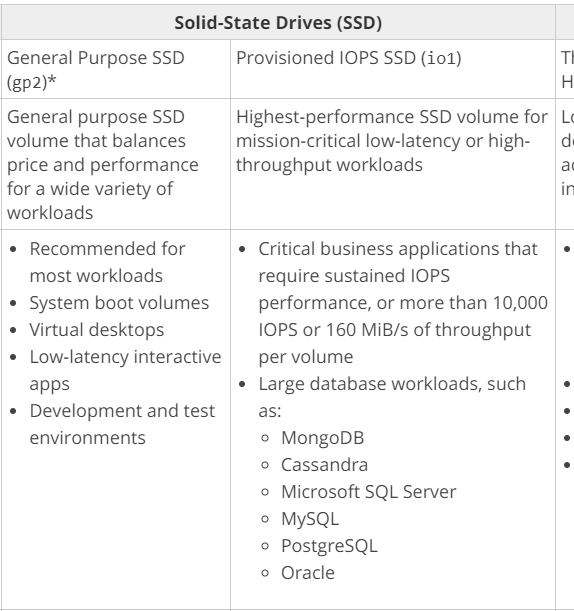
For more information on AWS EBS Volume types, please visit the following URL:
https://docs.aws.amazon.com/AWSEC2/latest/UserGuide/EBSVolumeTypes.html
Try now labs related to this question
-
This lab walks you through the steps to launch and configure a virtual machine in the Amazon cloud.
-
You will practice using Amazon Machine Images to launch Amazon EC2 Instances and use key pairs for SSH authentication to log into your instance. You will create a web page and publish it.
- Credit Needed10
- Time 0 : 30
A company requires to deploy an existing Java-based application to AWS. Which of the following should be used to fulfill this requirement in the quickest way possible?
Correct Answer - B
AWS Documentation mentions the following:
AWS Elastic Beanstalk is an easy-to-use service for deploying and scaling web applications and services developed with Java, .NET, PHP, Node.js, Python, Ruby, Go, and Docker on familiar servers such as Apache, Nginx, Passenger, and IIS.
You can simply upload your code and Elastic Beanstalk will automatically handle the deployment, from capacity provisioning, load balancing, auto-scaling to application health monitoring. At the same time, you retain full control over the AWS resources powering your application and can access the underlying resources at any time.
For more information on the Elastic Beanstalk service, please visit the following URL:
https://aws.amazon.com/elasticbeanstalk/
Try now labs related to this question
This lab walks you through to AWS Elastic Beanstalk. In this lab, you will quickly deploy and manage a Java application in the AWS Cloud without worrying about the infrastructure that runs those applications.
- Credit Needed10
- Time 0 : 45
You are working as an AWS Administrator for a software firm that has a popular Web application hosted on EC2 instance in various regions. You are using AWS CloudHSM for offloading SSL/TLS processing from Web servers. Since this is a critical application for the firm, you need to ensure that proper backups are performed for data in AWS CloudHSM on a daily basis. What does the AWS CloudHSM use to perform a secure & durable backup?
Correct Answer – A
To backup the AWS CloudHSM data to Amazon S3 buckets in the same region, AWS CloudHSM generates a unique Ephemeral Backup Key (EBK) to encrypt all data using AES 256-bit encryption key. This Ephemeral Backup Key (EBK) is further encrypted using Persistent Backup Key (PBK) which is also AES 256-bit encryption key.
- Option B is incorrect as Data Key & Customer Managed Key are not used by AWS CloudHSM for the encryption of data, instead of that EBK & PBK are used.
- Option C is incorrect. While taking the backup of data from different AWS CloudHSM clusters to the Amazon S3 bucket, the Amazon S3 bucket should be in the same region as that of the AWS CloudHSM cluster.
- Option D is incorrect as Data Key & Customer Managed Key are not used by AWS CloudHSM for the encryption of data, instead of that EBK & PBK are used for encrypting and saving data to the Amazon S3 bucket in the same region.
For more information on backing data from AWS CloudHSM, refer to the following URL:
https://docs.aws.amazon.com/cloudhsm/latest/userguide/backups.html
You want to build a decoupled, highly available and fault tolerant architecture for your application in AWS. You decide to use EC2, the Classic Load Balancer, Auto Scaling and Route 53. Which one of the following additional services should you involve in this architecture?
Answer – B
The Simple Queue Service can be used to build a decoupled architecture.
AWS Documentation further mentions the following:
Amazon Simple Queue Service (SQS) is a fully managed message queuing service that makes it easy to decouple and scale microservices, distributed systems, and serverless applications. Building applications from individual components that each perform a discrete function improves scalability and reliability, and is best practice design for modern applications.
For more information on the Simple Queue Service, please visit the following URL:
You have been assigned the task of architecting an application in AWS. The architecture would consist of EC2, the Classic Load Balancer, Auto Scaling, and Route 53. You need to ensure that Blue-Green deployments are possible in this architecture. Which routing policy should you ideally use in Route 53 in order to achieve Blue-Green deployments?
Correct Answer – D
AWS Documentation mentions that the Weighted routing policy is good for testing new versions of the software. Also, It is the ideal approach for Blue-Green deployments.
Weighted routing lets you associate multiple resources with a single domain name (example.com) or subdomain name (acme.example.com) and choose how much traffic is routed to each resource. This can be useful for a variety of purposes, including load balancing and testing new versions of the software.
For more information on Route 53 routing policies, please visit the following URL:
https://docs.aws.amazon.com/Route53/latest/DeveloperGuide/routing-policy.html
Note: Multivalue-answer is recommended to use only when you want to route traffic randomly to multiple resources, such as web servers, you can create one multivalue answer record for each resource and, optionally, associate an Amazon Route 53 health check with each record.
However, in this case, we need to choose how much traffic is routed to each resource (blue and green). For example, Blue is currently live and we need to send less portion of traffic to Green to check everything works fine. If yes, then we can decide to go with Green resources. If no, we can change the weight for that record to 0. Blue will be completely live again.
NOTE:
When you implement the Blue-Green Deployment, It's not always fixed that the Blue environment is in an Alive state and Green environment in Idle state vice versa. During the testing phase, you can route your traffic to both the Blue and Green environments with a specified traffic load.
For more information, please visit the link below:
- https://d1.awsstatic.com/whitepapers/AWS_Blue_Green_Deployments.pdf (11 of 35). AWS explained with the proper diagram.
A company is planning to deploy an application in AWS. This application requires an EC2 Instance to continuously perform log processing activities requiring Max 500MiB/s of data throughput. Which of the following is the best storage option for this requirement?
Correct Answer – C
While considering storage volume types for batch processing activities with large throughput, consider using the EBS Throughput Optimized volume type.
AWS Documentation mentions this, as shown below:
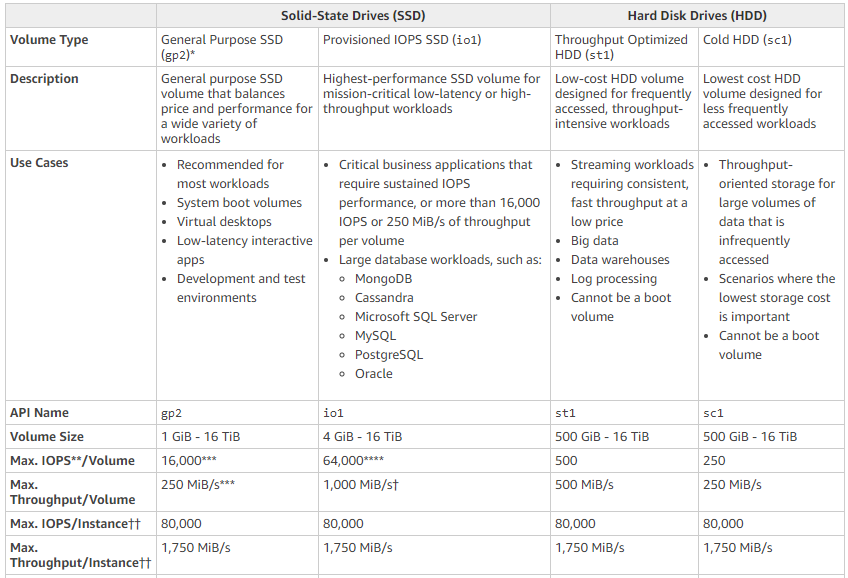
For more information on EBS Volume Types, please visit the following URL:
Try now labs related to this question
-
This lab walks you through the steps to launch and configure a virtual machine in the Amazon cloud.
-
You will practice using Amazon Machine Images to launch Amazon EC2 Instances and use key pairs for SSH authentication to log into your instance. You will create a web page and publish it.
- Credit Needed10
- Time 0 : 30
You are working as an AWS Architect for a start-up company. You have developed an application that will read out AWS Blogs to AWS professionals using "Amazon Polly". You need to perform a trial with the "Amazon S3" blog, in which the first "S3" should be read as "Amazon Simple Storage Service" while all subsequent "S3" should be read as "S3".
This test needs to be done in 2 different regions, us-west-1 & us-east-1. What could be done to perform the test successfully?
Correct Answer – B
Lexicons are specific to a region. You will need to upload Lexicon in each region where you need to use it. For a single text which appears multiple times in the content, you can create an alias using multiple Lexicons to have different speech.
- Option A is incorrect as Lexicons needs to upload in all regions where content will be using Amazon Polly.
- Option C is incorrect as if a single word is repeating multiple times in content & needs to have different speech, we need to have multiple Lexicons created.
- Option D is incorrect as Lexicons needs to upload in all regions where content will be using Amazon Polly & to have a different speech for the single word being repeated multiple times, multiple Lexicons needs to be created.
For more information on managing Lexicons, refer to the following URL:
You need to ensure that instances in a private subnet can access the Internet. The solution should be highly available and ensure less maintenance overhead. Which of the following would ideally fit this requirement?
Correct Answer – D
NAT gateway is used to enable instances in a private subnet to connect to the internet. However, the NAT gateway is implemented or placed in the public subnet of a VPC.
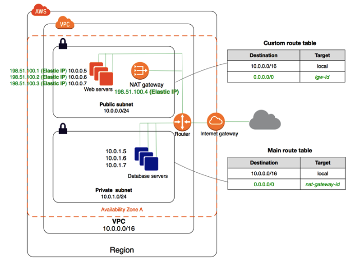
For more information, please check out the following URLs:
- https://docs.aws.amazon.com/vpc/latest/userguide/vpc-nat-gateway.html
- https://docs.aws.amazon.com/appstream2/latest/developerguide/managing-network-internet-manual.html
Shown below is a comparison of the NAT Gateway and NAT Instances as per the AWS Documentation. The documentation states that the NAT Gateway is highly available and requires less management.
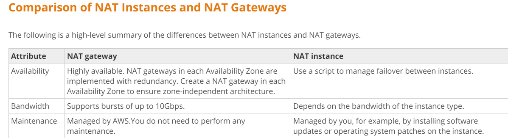
For more information on the above comparison, please visit the following URL:
Try now labs related to this question
This lab walks you through the steps to Create A NAT Gateway and allow internet access to Instance in Private Subnet.
- Credit Needed10
- Time 0 : 45
You need to have a Data storage layer in AWS. Following are the key requirements:
a) Storage of JSON documents
b) Availability of Indexes
c) Automatic scaling
What would be an ideal storage layer for the above requirements?
Correct Answer – A
AWS Documentation mentions the following:
Amazon DynamoDB is a fully managed NoSQL database service that provides fast and predictable performance with seamless scalability. DynamoDB enables customers to offload the administrative burdens of operating and scaling distributed databases to AWS so that they don’t have to worry about hardware provisioning, setup, and configuration, throughput capacity planning, replication, software patching or cluster scaling.
For more information on DynamoDB, please visit the following URL:
Try now labs related to this question
This lab walks you through to Amazon DynamoDB features. In this lab, we will create a table in Amazon DynamoDB to store information and then query that information from the DynamoDB table.
- Credit Needed10
- Time 0 : 30
You have a set of Docker images that you use for building containers. You want to start using the Elastic Container Service and utilize the Docker images. You need a place to store these Docker images. What would you use for this purpose?
Correct Answer - D
AWS Documentation mentions the following:
Amazon Elastic Container Registry (ECR) is a fully-managed Docker container registry that makes it easy for developers to store, manage, and deploy Docker container images. Amazon ECR is integrated with Amazon Elastic Container Service (ECS), simplifying your development to production workflow.
For more information on the Elastic Container Service, please visit the following URL:
You are working with an educational website that provides online content for professional exams using WordPress. You have recently added Amazon Polly plugins to the website to provide students audio recordings for exam contents.
You are getting customer feedback on the speech rate being too fast & continuous. What changes would you make in your content to resolve this? (Select Three)
Correct Answers – A, B, E
Using SSML tags, we can control the speech generated by Amazon Polly. In the above example, using SSML tags, convert commas to period & tag words and paragraphs as “Strong”, will help to control the speech speed, adds appropriate pause & emphasis on appropriate words slowing speaking rate.
- Option C is incorrect as commas will not insert a pause in the speech during the reading text.
- Option D is incorrect as adding the tag as “Reduced” will speed up speech rate, along with a decrease in volume.
For more information on SSML Tags supported by Amazon Polly, refer to the following URL:
You are developing a mobile application for your company with DynamoDB as the back end and JavaScript as the front end. During application usage, you notice that there are spikes in the application especially in the DynamoDB write throughput. What would be the most cost-effective and scalable architecture for this application?
Correct Answer – A
For more information on DynamoDB auto-scaling, please refer to the below URL:
Try now labs related to this question
This lab walks you through to Amazon DynamoDB features. In this lab, we will create a table in Amazon DynamoDB to store information and then query that information from the DynamoDB table.
- Credit Needed10
- Time 0 : 30
You are building a large-scale confidential documentation web server on AWS such that all of its documentation will be stored on S3. One of the requirements is that it should not be publicly accessible from S3 directly, and CloudFront would be needed to accomplish this. Which method would satisfy the outlined requirements?
Correct Answer – B
If you want to use CloudFront signed URLs or signed cookies to provide access to objects in your Amazon S3 bucket, you probably want to prevent users from accessing your Amazon S3 objects using Amazon S3 URLs. If users access your objects directly in Amazon S3, they bypass the controls provided by CloudFront signed URLs or signed cookies. For example, control over the date and time that a user can no longer access your content and control over which IP addresses can be used to access the content. In addition, if users access objects both through CloudFront and directly by using Amazon S3 URLs, CloudFront access logs are less useful because they're incomplete.
For more information on Origin Access Identity, please visit the link below:
Your company is planning on hosting its development, test and production applications on EC2 Instances in AWS. The team is worried about how access control would be given to relevant IT Admins for each of the above environments. As an architect, what would you suggest to manage the relevant accesses?
Correct Answer - A
AWS Documentation mentions the following to support this requirement:
Tags enable you to categorize your AWS resources in different ways, for example, by purpose, owner, or environment. This is useful when you have many resources of the same type — you can quickly identify a specific resource based on the tags you've assigned to it.
Each tag consists of a key and an optional value, both of which you define. For example, you could define a set of tags for your account's Amazon EC2 instances that help you track each instance's owner and stack level.
We recommend you to devise a set of tag keys that meets your needs for each resource type. Using a consistent set of tag keys makes it easier for you to manage your resources. You can search and filter the resources based on the tags you add.
For more information on using tags, please visit the link below:
https://docs.aws.amazon.com/AWSEC2/latest/UserGuide/Using_Tags.html
Try now labs related to this question
This lab walks you through the steps on how to create IAM Users, IAM Groups and adding IAM User to the IAM Group in AWS IAM service
- Credit Needed10
- Time 0 : 20
You want to set up a public website on AWS. Your requirements are as follows:
- You want the database and the application server running on AWS VPC.
- You want the database to be able to connect to the Internet, specifically for patch upgrades.
- You do not want to receive any incoming requests from the Internet to the database.
Which of the following solutions would best satisfy all these requirements?
Correct Answer – D
The below diagram from AWS Documentation showcases this architecture:
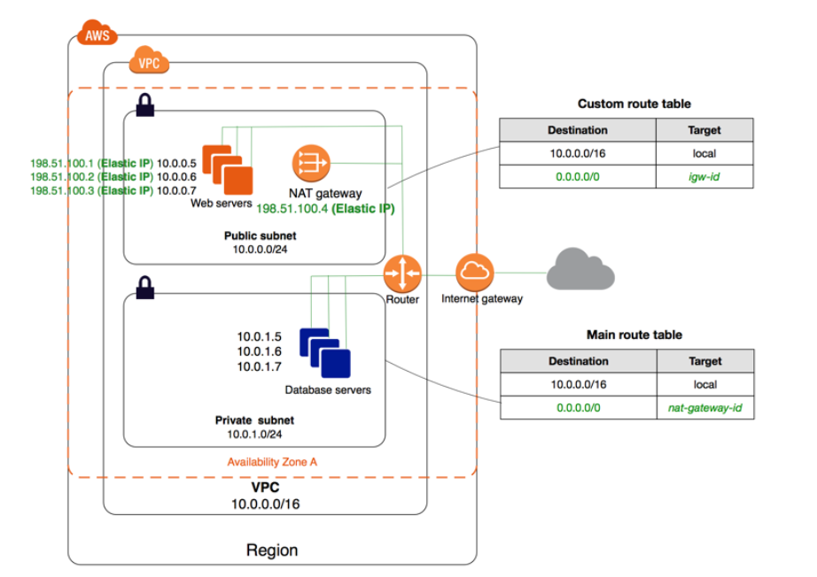
For more information on the VPC Scenario for public and private subnets, please visit the link below:
http://docs.aws.amazon.com/AmazonVPC/latest/UserGuide/VPC_Scenario2.html
Try now labs related to this question
This lab walks you through how to create a VPC using AWS CloudFormation Stack. In this lab we will launch a AWS CloudFormation template to create a four-subnet Amazon VPC that spans two Availability Zones and a NAT that allows servers in the private subnets to communicate with the Internet in order to download packages and updates.
- Credit Needed10
- Time 0 : 55
A company has a Redshift cluster for petabyte-scale data warehousing. The data within the cluster is easily reproducible from additional data stored on Amazon S3. The company wants to reduce the overall cost of running this Redshift cluster. Which scenario would best meet the needs of the running cluster while reducing the overall ownership of the cluster?
Correct Answer – D
Snapshots are point-in-time backups of a cluster. There are two types of snapshots: automated and manual. Amazon Redshift stores these snapshots internally in Amazon S3 by using an encrypted Secure Sockets Layer (SSL) connection. If you need to restore a snapshot, Amazon Redshift creates a new cluster and imports data from the snapshot that you specify.
Since the question already mentions that the cluster is easily reproducible from additional data stored on Amazon S3, you do not need to maintain snapshots.
For more information on Redshift Snapshots, please visit the URL below:
http://docs.aws.amazon.com/redshift/latest/mgmt/working-with-snapshots.html
You want to set up an application in AWS, and the followings are the requirements:
a) A Web tier hosted on EC2 Instances
b) Session data to be written to DynamoDB
c) Log files to be written to Microsoft SQL Server
How would you ensure that the application writes data to a DynamoDB table?
Correct Answer – D
IAM roles are designed so that your applications can securely make API requests from your instances, without requiring you to manage the security credentials that the applications use. Instead of creating and distributing your AWS credentials, you can delegate permission to make API requests using IAM roles.
For more information on IAM roles, please refer to the link below:
http://docs.aws.amazon.com/AWSEC2/latest/UserGuide/iam-roles-for-amazon-ec2.html
You are performing a Load Testing exercise on your application that is hosted on AWS. While testing your Amazon RDS MySQL DB Instance, you notice that your application becomes non-responsive when you reach 100% CPU utilization. Your application is read-heavy. Which methods would help scale your data-tier to meet the application’s needs? (Select Three)
Correct Answers - A, D, and E
Amazon RDS Read Replicas provide enhanced performance and durability for database (DB) instances. This replication feature makes it easy to elastically scale out beyond the capacity constraints of a single DB Instance for read-heavy database workloads. You can create one or more replicas of a given source DB Instance and serve high-volume application read traffic from multiple copies of your data, thereby increasing aggregate read throughput.
- For more information on Read Replicas, please refer to the link below.
Sharding is a common concept to split data across multiple tables in a database. Let's consider the following example.
Application Shards
In this example, we assume that our application currently doesn't have enough load to need an application shard for each category, but we want to plan ahead with growth in mind. To make future growth easier we make use of application shards. So our application code will act as if it has seven shards, but Hibernate will map those seven shards onto a smaller number of application shards. Each application shard will map to a MySQL database instance. By using this mapping we can distribute the load to best suit our needs. For our application, assume that sports and entertainment generate as much load as the other five categories combined. These two categories will map to one application shard and the other five categories will map to the other application shard. The two application shards will be mapped as follows.
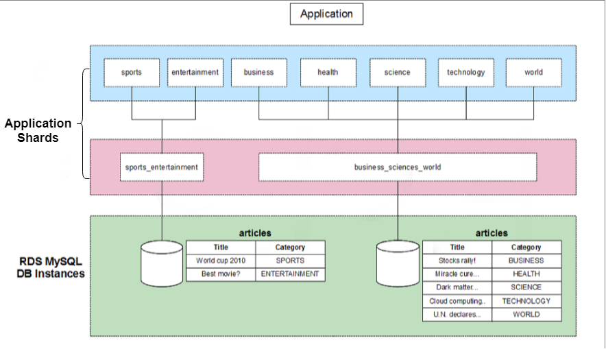
- For more information on sharding, please refer to the link below.
Amazon ElastiCache is a web service that makes it easy to deploy, operate, and scale an in-memory data store or cache in the cloud. The service improves the performance of web applications by allowing you to retrieve information from fast, managed, in-memory data stores, instead of relying entirely on slower disk-based databases.
- For more information on ElastiCache, please refer to the link below.
- Option B is incorrect because it is not an ideal way to scale a database. Amazon RDS Auto Scaling is to scale the storage capacity. If the storage capacity threshold is reached, then capacity will be scaled through Auto Scaling. RDS Auto Scaling does not look for the CPU utilization threshold so it cannot be a solution for bottlenecks to read heavy databases.
- Option C is not an ideal choice. Because our application is read-heavy and this is the cause of the problem that we are facing with the RDS. So for this issue, Creating Read replicas, Elastic cache implementation, and Sharding the dataset are the ways through which we can tackle this issue. But if we have too may PUT requests for the DB, that is causing the issue then we can create an SQS queue and store these PUT requests in the message queue and then process it accordingly.
- Option F is invalid because the Multi-AZ feature is only a failover option.
Try now labs related to this question
This lab walks you through to the creation and testing of an Amazon Relational Database Service (Amazon RDS) database. We will create an RDS MySql Database and test the connection using MySQL Workbench.
- Credit Needed10
- Time 0 : 50
You work for a big company having multiple applications that are very different from each other. These applications are built using different programming languages. How could you deploy these applications as quickly as possible?
Correct Answer – C
Elastic Beanstalk supports the deployment of web applications from Docker containers. With Docker containers, you can define your own runtime environment. You can choose your own platform, programming language, and any application dependencies (such as package managers or tools), that aren't supported by other platforms. Docker containers are self-contained and include all the configuration information and software your web application requires to run.
- Option A is incorrect because the requirement is to deploy multiple apps that are very different from each other and developed with different programming languages.
- Option B is ideally used for running code and not packaging the applications and dependencies.
- Option D is incorrect as Deploying Docker containers using CloudFormation is also not an ideal choice.
For more information on Docker and Elastic Beanstalk, please visit the URL below:
Try now labs related to this question
This lab walks you through to AWS Elastic Beanstalk. In this lab, you will quickly deploy and manage a Java application in the AWS Cloud without worrying about the infrastructure that runs those applications.
- Credit Needed10
- Time 0 : 45
You are designing a system which needs at minimum, 8 m4.large instances operating to service traffic. While designing a system for high availability in the us-east-1 region having 6 Availability Zones, your company needs to be able to handle the death of a full availability zone. How should you distribute the servers to save as much cost as possible, assuming all of the EC2 nodes are properly linked to an ELB? Your VPC account can utilize us-east-1’s AZs a through f, inclusive.
Correct Answer – C
The best way is to distribute the instances across multiple AZs to get the best performance and to avoid a disaster scenario.
With this solution, you will always have a minimum of more than 8 servers even if one AZ went down.
Even though options A and D are also valid, the best solution for distribution is Option C.
For more information on High Availability and Fault tolerance, please refer to the link below:
https://media.amazonwebservices.com/architecturecenter/AWS_ac_ra_ftha_04.pdf
Note:
In option A, we need to distribute 3 servers in each AZ.
so, A=3, B=3, C=3, D=3. Total servers used=12.
In option B, we will not get high availability.
In option C, we need to distribute 2 servers in each AZ.
so, A=2, B=2, C=2, D=2, E=2. Total servers used=10.
In option D, we need to distribute 4 servers in each AZ.
so, A=4, B=4, C=4. Total servers used=12.
In the question, it's clearly mentioned that "the company needs to be handle death of full AZ and save as much cost as possible". In option C, we are using fewer servers i.e 10 servers distributed in more AZ's.
The question says" You are designing a system which needs at minimum, 8 m4.large instances operating to service traffic". Now it is clear that the number of minimum instances required should be 8. The next part of the question is that "How should you distribute the servers to save as much cost as possible, assuming all the EC2 nodes are properly linked to an ELB?"
We have to select the solution that should be cost-effective and more available. Based on this, Option B is not that much available. Because here you are using only 2 availability zones with 8 instances in each i.e. 16 instances.
So, Option C is the correct and more suitable here.
You have been given a business requirement to retain log files for your application for 10 years. You need to regularly retrieve the most recent logs for troubleshooting. Your logging system must be cost-effective, given the large volume of logs. Which technique would you use to meet these requirements?
Correct Answer - C
Option A is incorrect because it is not a cost-effective option.
Option B is incorrect because it will not serve the purpose of regularly retrieving the most recent logs for troubleshooting. You will need to pay more to retrieve the logs faster from this storage option.
Option D is incorrect because it is neither an ideal nor a cost-effective option.
For more information on Lifecycle management, please refer to the link below:
http://docs.aws.amazon.com/AmazonS3/latest/dev/object-lifecycle-mgmt.html
Try now labs related to this question
This lab walks you through to Amazon Simple Storage Service. Amazon S3 has a simple web services interface that you can use to store and retrieve any amount of data, at any time, from anywhere on the web. In this lab we will demonstrate AWS S3 by creating a sample S3 bucket, uploading an object to S3 bucket and setting up bucket permission and policy.
- Credit Needed10
- Time 0 : 30
An application in AWS is currently running in the Singapore region. You have been asked to implement disaster recovery for the same such that if the application goes down in the Singapore region, it has to be started in the Asia region. To implement disaster recovery, you need a disaster recovery strategy. Which of the below options would you consider for that?
Correct Answer - B
If you need an AMI across multiple regions, you have to copy the AMI across regions. Note that, by default, AMIs that you have created will not be available across all regions. Hence, option A is automatically invalid.
You can share AMIs with other users, but they will not be available across regions. You have to copy the AMI across regions. Hence, options C and D are also invalid.
- For more information on copying AMIs, please refer to the URL below.
You are architecting an application environment on AWS. It is required to ensure that auditing the environment for compliance is easy and follows strict security compliance requirements. Which service or service feature would you enable to take the advantage of monitoring?
Correct Answer – A
AWS CloudTrail is a de facto service provided by AWS for monitoring all the API calls to AWS and is used for logging and monitoring for compliance purposes. Amazon CloudTrail detects every call made to AWS and creates a log which can then be used for analysis.
For more information on Amazon CloudTrail, please visit the link below.
As a part of your application architecture requirements, the company has requested the ability to run analytics against all the combined log files from the Elastic Load Balancer. Which services would you use together to collect logs and process log file analysis in an AWS environment?
Correct Answer – D
This question is not that complicated, even if you don't understand the options. If you see “collection of logs and processing of logs”, directly think of AWS EMR.
Amazon EMR provides a managed Hadoop framework that makes it easy, fast, and cost-effective to process a vast amount of data across dynamically scalable Amazon EC2 instances. You can also run other popular distributed frameworks such as Apache Spark, HBase, Presto, and Flink in Amazon EMR, and interact with data in other AWS data stores such as Amazon S3 and Amazon DynamoDB.
Amazon EMR securely and reliably handles a broad set of big data use cases, including log analysis, web indexing, data transformations (ETL), machine learning, financial analysis, scientific simulation, and bioinformatics.
For more information on EMR, please visit the link below.